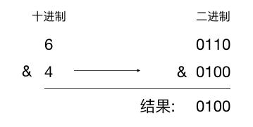
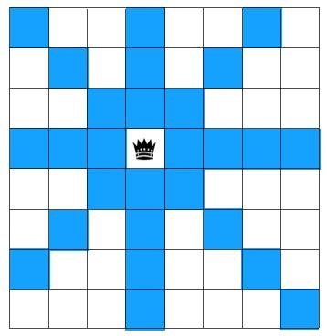
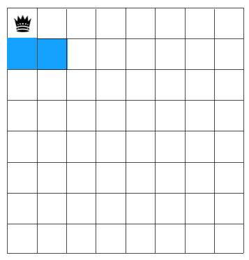
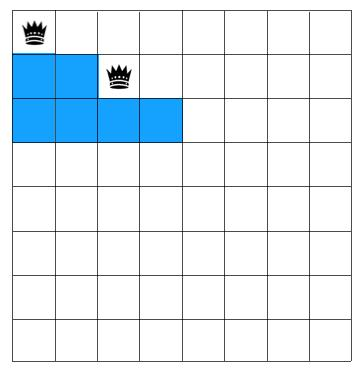
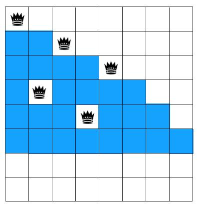
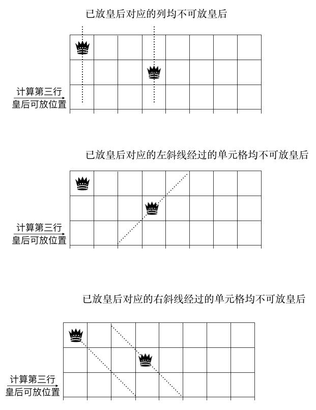
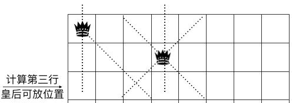
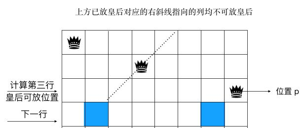

位运算与经典八皇后问题
编程仔日常 2020-04-03 09:53:42
文章来源：https://mp.weixin.qq.com/s/14jQ1yLL4Cw6ufI2E3R-yg
作者：码海
前言
位运算在生产或算法解题中并不常见，不过如果你用得好，可以达到事半功倍的效果，而且位运算用得好，也可以极大地提升性能，如果在生产或面试中能看到使用位运算来解题，会让人眼前一亮，觉得你还是有点逼格的，巧用位运算，不仅会提升性能，还会让代码的可读性更好，达到四两拨千斤的效果，今天我们就来学学位运算在解题中的一些技巧，最后会用位运算来看看怎么解八皇后这道大 Boss 题，相信你看完肯定会有收获！
本文将会从以下几个方面来讲解位运算
- 什么是位运算，位运算常见操作
- 位运算使用技巧简介
- 巧用位运算解算法题
什么是位运算，位运算常见操作
在现代计算机中所有的数据在内存中都是以二进制存在的，位运算就是直接对整数在内存中的二进制位进行操作，由于位运算直接对内存数据进行操作，无需转成十进制，因此使用位运算的处理速度是很快的。
举个简单的例子， 当我们要计算 6 & 4 的结果，在做位运算的时候首先要把 6，4 转成二进制，然后再做相应的位操作（与）。

基本的位运算有与、或、异或、取反、左移、右移这6种，介绍如下：
& 与：只有当两位都是 1 时结果才是 1，否则为 0 。
0110
& 0100
-----------
0100
| 或：两位中只要有 1 位为 1 结果就是 1，两位都为 0 则结果为 0。
0110
& 0110
-----------
0110
^ 异或：两个位相同则为 0，不同则为 1
0110
^ 0100
-----------
0010
~ 取反：0 则变为 1，1 则变为 0
~ 0110
-----------
1001
<< 左移：向左进行移位操作，高位丢弃，低位补 0
int a = 8;
a << 3;
移位前：0000 0000 0000 0000 0000 0000 0000 1000
移位后：0000 0000 0000 0000 0000 0000 0100 0000
>> 右移：向右进行移位操作，对无符号数，高位补 0，对于有符号数，高位补符号位
unsigned int a = 8;
a >> 3;
移位前：0000 0000 0000 0000 0000 0000 0000 1000
移位后：0000 0000 0000 0000 0000 0000 0000 0001
int a = -8;
a >> 3;
移位前：1111 1111 1111 1111 1111 1111 1111 1000
移位后：1111 1111 1111 1111 1111 1111 1111 1111
位运算使用技巧简介
接下来我们就由浅入深地来学习一下使用位运算的那些黑科技
1、 判断整型的奇偶性
使用位运算操作如下
if((x & 1) == 0) {
// 偶数
} else {
// 奇数
}
这个例子相信大家都见过，只需判断整型的第一位是否是 1 即可，如果是说明是奇数，否则是偶数
2、 判断第 n 位是否设置为 1
if (x & (1<<n)) {
// 第 n 位设置为 1
}
else {
// 第 n 位设置为 1
}
在上例中我们判断第一位是否为 1，所以如果要判断第 n 位是否 1，只要把 1 左移 n 位再作与运算不就完了。
3、 将第 n 位设置为 1
y = x | (1<<n)
思路同第二步，先把 1 移到第 n 位再作或运算，这样第 n 位就肯定为 1。
4、 将第 n 位设置为 0
y = x & ~(1<<n)
先将 1 左移到 第 n 位，再对其取反，此时第 n 位为 0，其他位都为 1，这样与 x 作与运算后，x 的第 n 位肯定为 0。
5. 将第 n 位的值取反
y = x ^ (1<<n)
我们知道异或操作是两个数的每一位相同，结果为 0，否则是 1，所以现在把 1 左移到第 n 位，则如果 x 的第 n 位为 1，两数相同结果 0，如果 x 的第 n 位为 0，两数不相同，则为 1。来看个简单的例子
01110101 ^ 00100000 -------- 01010101
如图示，第五位刚好取反
6、 将最右边的 1 设为 0
y = x & (x-1)
如果说上面的 5 点技巧有点无聊，那第 6 条技巧确实很有意思，也是在 leetcode 经常出现的考点，下文中大部分习题都会用到这个知识点，务必要谨记！掌握这个很重要，有啥用呢，比如我要统计 1 的位数有几个，只要写个如下循环即可，不断地将 x 最右边的 1 置为 0，最后当值为 0 时统计就结束了。
count = 0
while(x) {
x = x & (x - 1);
count++;
}
先介绍这么多吧，如果大家对其他的位运算技巧感兴趣可以看看文末的参考链接
巧用位运算解算法题
接下来我们看看位运算在算法题中的应用。
1、 高频面试题：老鼠试毒
有 8 个一模一样的瓶子，其中有 7 瓶是普通的水，有一瓶是毒药。任何喝下毒药的生物都会在一星期之后死亡。现在，你只有 3 只小白鼠和一星期的时间，如何检验出哪个瓶子里有毒药？
解题步骤如下：
1、 把这 8 个瓶子从 0 到 7 进行编号，用二进制表示如下
000
001
010
011
100
101
110
111
2、 将 0 到 7 编号中第一位为 1 的所有瓶子（即 1，3，5，7）的水混在一起给老鼠 1 吃，第二位值为 1 的所有瓶子（即2，3，6，7）的水混在一起给老鼠 2 吃， 第三位值为 1 的所有瓶子（4，5，6，7）的水混在一起给老鼠 3 吃，现在假设老鼠 1，3 死了，那么有毒的瓶子编号中第 1，3 位肯定为 1，老鼠 2 没死，则有毒的瓶子编号中第 2 位肯定为 0，得到值 101 ，对应的编号是 5， 也就是第五瓶的水有毒。
这道题及其相关的变种在面试中出现地比较频繁，比如我现在把 8 瓶水换成 1000 瓶，问你至少需要几只老鼠才能测出有毒的瓶子，有了上述的思路相信应该不难，几只老鼠就相当于几个进制位，显然 2^10 = 1024 > 1000，即 10 只老鼠即可测出来。
2、 leetcode 232
给定一个数，判断它是否是可以用 2 的幂次方表示，可以返回 true，不可以返回 false，比如 8 = 2^3, 说明可以用 2 的幂次方表示，返回 true，9 不可以，所以返回 false。
解题分析：这题常规解法是做个循环不断地乘以 2 ，看下是否等于给定的值，如果等于说明是 2 的幂次方，否则如果不断累乘 2 后大于给定的值，说明不能用 2 的幂次方表示，时间复杂度是所做的累乘的次数，即 2^n >= 给定的值中的 n。
那是否有更快的解法呢?
上文的介绍中其实我们已经埋下伏笔了，没错用 x & (x-1)，首先我们要发现能用 2 的幂次方表示的数的特点：它的所有位中有且仅有一位为 1，如
00001 2^0 = 1
00010 2^1 = 2
00100 2^2 = 4
01000 2^3 = 8
10000 2^3 = 16
如图示，所有 2 的幂次方最多只有一位为 1
明白了这一点， 我们的思路就简单了，由于符合 2 的幂次方的数只有一位为 1，x & (x-1) 是把最后一位 1 置为 0，所以只要做一次 x & (x-1) 运算，看它的值是否等于 0 即可，如果是 0 说明它可以用 2 的幂次方表示，否则不可以，代码如下:
if(x&(x-1)) { //使用与运算判断一个数是否是2的幂次方
printf("%d不是2的幂次方！\n", num);
} else {
printf("%d是2的%d次方！\n", num, log2(num));
}
只用一行代码即可搞定，方便了很多！
3、 leetcode 232
给定一个非负整数 num. 对于 0 ≤ i ≤ num 范围中的每个数字 i, 计算其二进制数中 1 的数目并将它们作为数组返回。输入: 5 输出: [0,1,1,2,1,2]
这题的常规解法相信大家都能猜到，就是从 0 到 num 循环一遍，求出每个数字 i 中 1 的数目。
如果用位运算怎么做呢，先来看下解法，然后我们再来分析为啥这样写，非常巧妙！
Python 代码
vector<int> countBits(int num) {
vector<int> bits(num+1, 0);
for (int i = 1; i<= num; i++) {
bits[i] += bits[i & (i-1)] + 1;
}
}
Java 代码
public static int[] countBits(int num) {
int[] bits = new int[num+1];
Arrays.fill(bits, 0);
for (int i = 1; i <= num; i++) {
bits[i] = bits[i & (i-1)] + 1;
}
return bits;
}
最关键的代码看这一行
bits[i] += bits[i & (i-1)] + 1;
这行代码是啥意思呢，i & (i-1) 是把 i 的最后一个值为 1 的位设为 0，不难发现整数「i & (i-1)」 中 1 的位数比 i 中 1 的位数少一个 ，所以要加 1（即 bits[i & (i-1)] + 1）。非常巧妙，这样从 1 开始走一遍循环即可，中间不要做任何针对变量 i 的 1 的个数的计算，只不过付出了一个 bits 数组的代价。这里也是利用了以空间换时间的思想。
4、 利用位运算来解八皇后问题
接下来我们来看看终级 Boss 题，如何用位运算来解八皇后问题，解题中运用到了非常多的位运算技巧，相信你学完会收获不少。
在 8×8 格的国际象棋上摆放八个皇后，使其不能互相攻击，即任意两个皇后都不能处于同一行、同一列或同一斜线上，问有多少种摆法
举个简单的下图所示的例子，如果在棋盘上放置一个皇后，则与这个皇后同一行，同一列，且皇后所在斜线经过的格子不能再放其他皇后。

如图示，在其中任意一行放置一个皇后，则与此皇后同行，同列，同对角线的都不允许再放其他皇后，图中蓝色区块不允许放其他皇后。
一般我们用回溯法解八皇后。这里简单介绍一下啥是回溯法。
在第一行从左到右先选择一个位置放置皇后，由于第一行放了皇后，第二行可放皇后的位置受到了限制（下图蓝色区块表示对应行的格子不能放皇后）

如图示,第二行放皇后的位置只能从第三个格子开始选
第二行我们选第三个格子放皇后，选完开始在第三行选，第三方可选的位置也受到了第一，二行皇后所放位置的影响

如图示，第三行只能从第五个格子开始放置皇后
同理，第三，四，五行都从左到右选择符合条件的的格子放置皇后，选完后问题来了，第六行所在行没有可选的位置了！如图示

怎么办呢，回溯！重新摆放第五行的皇后，将其放到第八格上

重新摆放后发现第六行还是没有符合条件的格子，咋办，我们知道第六行可摆放皇后的格子受第五行影响，而第五行受第四行摆放皇后位置的影响的，所以回溯到第四行，将皇后位置摆放到当前行的其他位置（第七格），再接着往下放 5，6，7，8 行的皇后。。。，只要不满足条件，改变上一层的的条件重新来，上一层调整后还是不符合条件，再调整上上层的。。。，调整完后重新往下递归选择，直到找到符合条件的，找到之后再在第一层换一个位置选皇后递归往下层选择执行，直到找到所有的解，这种不满足条件就回退上层调整再试的思想就是回溯法，可以看到回溯法一般是用递归实现的。
回溯算法有不少变种，这里我们重点介绍使用位运算的回溯算法，它是所有解法中最高效的！如果在面试中能使用位运算来解回溯算法，绝对会让面试官给你个大大的赞！
接下来是重点了，怎么用位运算来求解。
在以上回溯法的分析中，我们不难发现，在八皇后问题中，问题的关键是找出行可放皇后的格子。找到之后问题就解决了 90%，所以接下来我们就来看看怎么找这些可用的格子。
假设我们要求解第三行可放皇后的格子（说明一二行的皇后已放好了）那么第三行可放皇后的位置受到哪些条件的限制呢。显然在第一二行已放皇后的格子所在的列，左斜线，右斜线对应的方格都不能放皇后，如图示:

我们以 column 来记录所有上方行已放置的皇后导致当前行格子不可用的集合，所在列如果放了皇后，则当前行格子对应的位置为 1，否则为 0，同理,以 pie（撇，左斜线） 记录所有已放置的皇后左斜方向导致当前行格子不可用的集合， na（捺，右斜线） 表示所有已放置的皇后右斜方向导致当前行不可用的集合。则对于第三行来说我们有：
column = 10010000 (上图中的第一个图，第 1，4 列放了皇后，所以 1，4 位置为 1，其他位置为 0）
pie = 00100000 (上图中的第二个图，左斜线经过第三行的第三个方格，所以第三位为 1）
na = 00101000 (上图中的第三个图，右斜线经过第三行的第三, 五个方格，所以第三,五位为 1）
将这三个变量作或运算得到结果如下
10010000 | 00100000 | 00101000 ----------------------- 10111000
也就是说对于第三层来说第 1，3，4，5 个格子不能放皇后。如图示

于是可知 column | pie | na 得到的结果中值为 0 的代表当前行对应的格子可放皇后， 1 代表不能放，但我们想改成 1 代表格子可放皇后， 0 代表不可放皇后，毕竟这样更符合我们的思维方式，怎么办，取反不就行了，于是我们有~(column| pie | na)。
问题来了，这样取反是有问题的，因为这三个变量都是定义的 int 型，为 32 位，取反之后高位的 0 全部变成了 1，而我们只想保留低 8 位（因为是 8 皇后），想把高位都置为 0，怎么办，这里就要用到位运算的黑科技了
~(column | pie | na) & ((1 << 8)-1)
后面的的 ((1<< 8) -1) 表示先把 1 往左移 8 位，值为 100000000,再减 1 ，则低 8 位全部为 1，高位全部为 0！（即 0011111111）再作与运算，即可保留低 8 位，去除高位。
费了这么大的劲，我们终于把当前行可放皇后的格子都找出来了（所有位值为 1 的格子可放置皇后）。接下来我们只要做个循环，遍历所有位为 1 的格子，每次取出可用格子放上皇后，再找下一层可放置皇后的格子，依此递归下去即可,直到所有行都遍历完毕（递归的终止条件）。
还有一个问题，已知当前行的 column，pie，na，怎么确定下一行的 column，pie，na 的值（毕竟选完当前行的皇后后，要确定下一行的可用格子，而下一行的可用格子依赖于 column，pie，na 的值）
上文可知，我们已经选出了当前行可用的格子（相应位为 1 对应的格子可用），假设我们在当前行选择了其中一个格子来放置皇后，此位置记为 p（如果是当前行的最后一个格子最后一个格子，则值为 1，如果放在倒数第二个，值为 10，倒数第三个则为 100，依此类推），则对于下一行来说，显然 column = column | p
那么 pie 呢，仔细看下图，显然应该为 (pie | p) << 1, 左斜线往下一行的格子延展时，相当于左移一位，

如图示：下一行的 pie 显然为 (pie | p) << 1。
同理 下一行的 na 为 (na | p) >> 1。
有了以上详细地解析，我们就可以写出伪代码了
void queenSettle(row, colomn,pie,na) {
N = 8; // 8皇后
if (row >= N) {
// 遍历到最后一行说明已经找到符合的条件了
count++;return
}
// 取出当前行可放置皇后的格子
bits = (~(colomn|pie|na)) & ((1 << N)-1)
while(bits > 0) {
// 每次从当前行可用的格子中取出最右边位为 1 的格子放置皇后
p = bits & -bits
// 紧接着在下一行继续放皇后
queenSettle(row+1, colomn | p, (pie|p) << 1, (na | p) >> 1)
// 当前行最右边格子已经选完了，将其置成 0，代表这个格子已遍历过
bits = bits & (bits-1)
}
}
一开始传入 queenSettle(0,0,0,0) 这样即可得到最终的解。伪代码写得很清楚了，相信用相关语言不难实现，这里就留给大家作个练习吧。